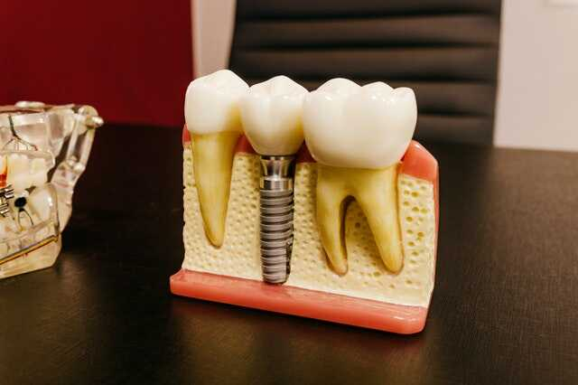

#1. Cosmetic Dentistry

Our clinic fully undertakes the aesthetic restoration of each patient's smile. Unsightly fillings, broken teeth, gaps, crowded teething, tooth discoloration and other conditions that make it difficult to smile can be restored to improve facial aesthetics. Aesthetic dentistry is a process of restoring the aesthetics of the teeth and the patient's smile in general using the classic general dentistry. The techniques used to improve the smile are • Bleaching • All-ceramic or composite resin facades • Ceramic crowns or bridges • Ceramic or composite resin inserts and inlays • Composite residual seals (seals) • Whitening is a process where teeth that have darkened with age, coffee, tea, cigarettes, etc. regain their white color. This procedure can be done either at home or in the doctor's office or even a combination of both. For whitening at home, our clinic manufactures personalized splints for each patient, after taking fingerprints, where they will receive the whitening agent. Then the patient, after being informed about the correct placement of the whitening agent, places the splint, mainly at night, for 4-6 hours daily. The patient will continue the procedure usually for 2 weeks although the duration mainly depends on the color of the teeth. For whitening in the doctor's office, we usually apply a stronger bleaching agent than in whitening at home. We start by removing a protective gel on the gums and then apply the whitening agent for an hour usually, while this process is repeated two or three times, which will depend on the discoloration of the teeth. Both procedures use certified whitening agents, completely safe and secure for the patient. The faces are made of porcelain or composite resin where they are placed mainly on the front teeth to correct the color, shape and size of the teeth. We start by grinding the minimum thickness of the teeth around half a millimeter and in some cases it becomes even less or no grinding at all. When they are porcelain veneers after grinding we take impressions and make temporary restorations to protect the teeth until the permanent veneers are made. We send the fingerprints to the dental laboratory where in about a week he will send us the final work where the permanent gluing of the faces to the patient will take place. When the faces are made of composite resin after a small usually shaping of the teeth, the composite resin material is placed with a suitable color synthesis technique and the patient gets the smile he wants in a single session. With the ceramic crowns we restore teeth giving them the appropriate shape, color and size. They require larger preparations but allow us to shape the teeth more radically and give them better functionality and aesthetics. With the ceramic bridges we replace the missing teeth resting on their neighbors while giving the appropriate aesthetics and functionality. Inserts and inlays are made of either composite resin or porcelain and restore aesthetically large cavities of posterior teeth. They are made in the laboratory and then glued to these cavities. Black fillings or amalgam fillings are usually unsightly and their mercury content, although considered safe, has been slowly abandoned by the European dental community. That is why our clinic prefers to use the composite resin as the main material for filling the seals.
#2. General Dentistry

Our clinic fully undertakes the dental care of adults and children. Our goal is to address all oral problems and restore the oral health of our patients. Our clinic undertakes treatments for the entire range of dentistry, from simple dentistry to minor oral surgery with seriousness and attention to the health and satisfaction of the patient. Some of the tasks undertaken by our clinic are the following: • extractions (simple and surgical teeth) • occlusions • cleaning • periodontal treatment (conservative and surgical) • endodontic treatments (single and multiple teeth) • hard and soft tissue regenerations • axial reconstructions • fixed prosthesis (bridges, facades, inserts, inlays) • removable prosthesis (complete, partial, direct and superposed dentures) • surgical and prosthetic implants • cosmetic dentistry, and bridges, aesthetic restorations with composite resin) • pediatric dentistry in cooperative children • Laser • Preventive dentistry
#3. Dental Implants

With dental implants, patients regain teeth firmly and aesthetically, so that the chewing function, speech and aesthetics of the face are restored very satisfactorily. The dental implant is completely biocompatible and safe for the human body and can worthily replace the root of a missing tooth. Then the crown is placed on the implant that replaces the tooth mill, ie the part of the tooth that is visible in the mouth. The implant is placed in cases • One or more teeth are missing and the patient does not want to grind the adjacent teeth to make a bridge • When the patient wears a movable denture and wants to improve its retention. • In patients who are missing a lot or all of their teeth and want teeth still and stable again. The implants are placed in two phases. One is the surgical part and the second is the prosthesis. For the surgical part, our clinic has the appropriate surgical equipment, maintains the premises in conditions of excellent disinfection and has the experience and knowledge for the successful placement of the implants. The implant placement procedure is performed under local anesthesia, without the patient experiencing any pain. Then we leave the implant for about a quarter to be ossified, ie to join the bone biologically in order to gain stability and longevity. For the interval of waiting for the osseointegration, a temporary restoration is placed so that the functionality and the aesthetics of the mouth are normal. Then follows the prosthetic phase where after the implant is revealed, the mouth is imprinted and in the laboratory the prosthetic work is made, which is then glued or screwed to the implants. In patients who have lost their teeth for a long time, they usually do not have enough bone to place the implant properly. Our clinic has the ability to help bone regeneration with implants completely safe for the patient and effective for bone growth. Also, when they block anatomical molecules such as the sinus, our clinic can lift the sinus and enable the correct placement of an implant. Some conditions such as treatment of intravenous bisphosphonate disease, pregnancy, young age under 18 years, stroke that has occurred in less than six months, heart attack that the patient has gone through and heart function has not been fully restored are prohibitive factors for implant placement. Also in cases of irradiated jaws, but also for various other serious diseases Smoking is also considered to be an aggravating factor for the success of implants. Diabetes mellitus when controlled, treated periodontitis, taking bisphosphonates by mouth do not usually create an inhibitory factor for the placement of implants. Implant placement is a process that is done many years by our clinic so our experience, knowledge and appropriate equipment offers the best result for patient satisfaction.